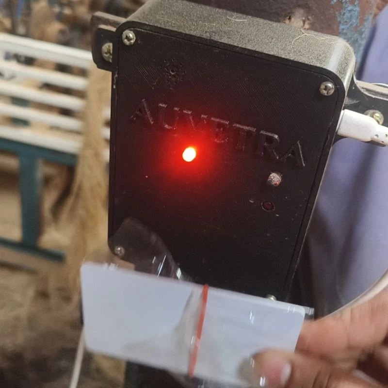
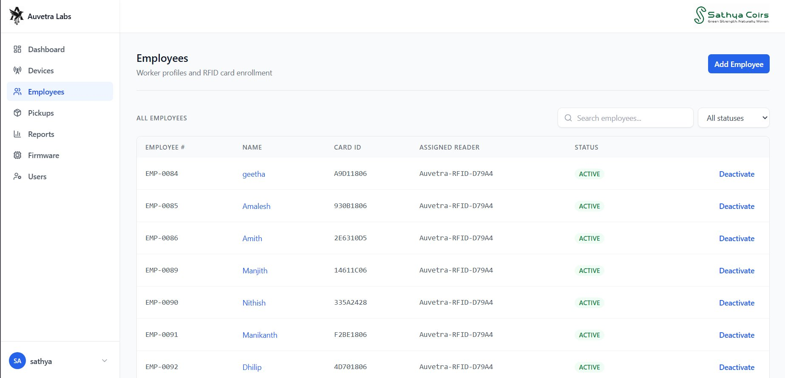
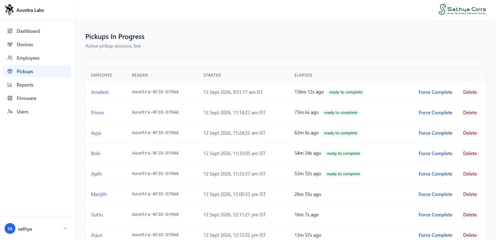
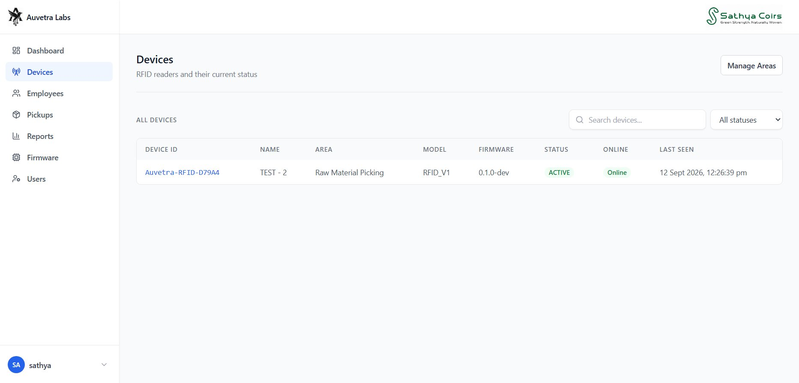
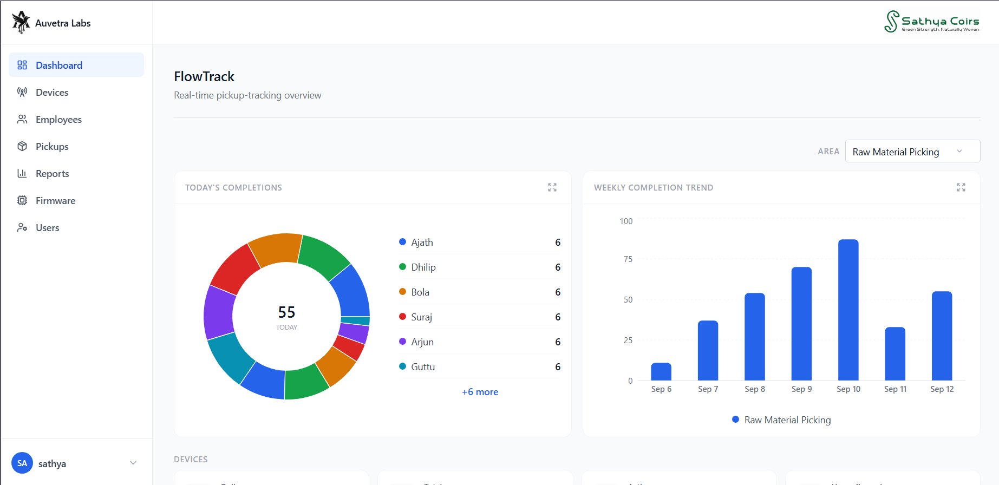
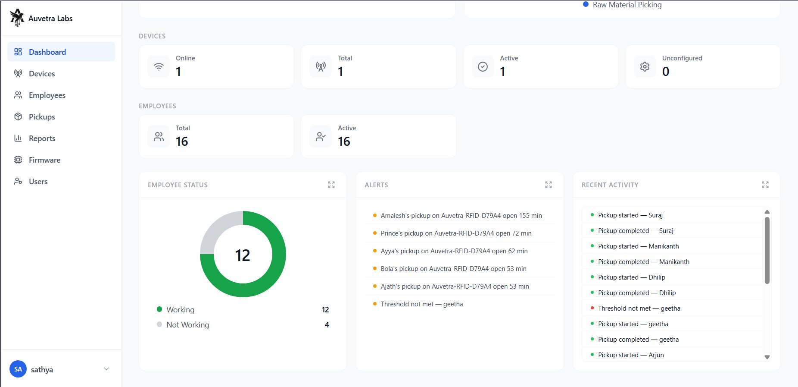
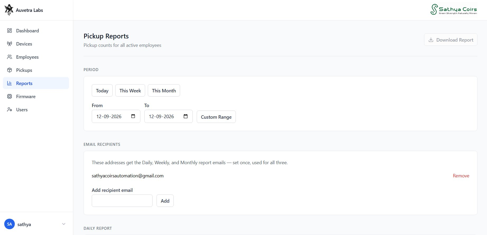
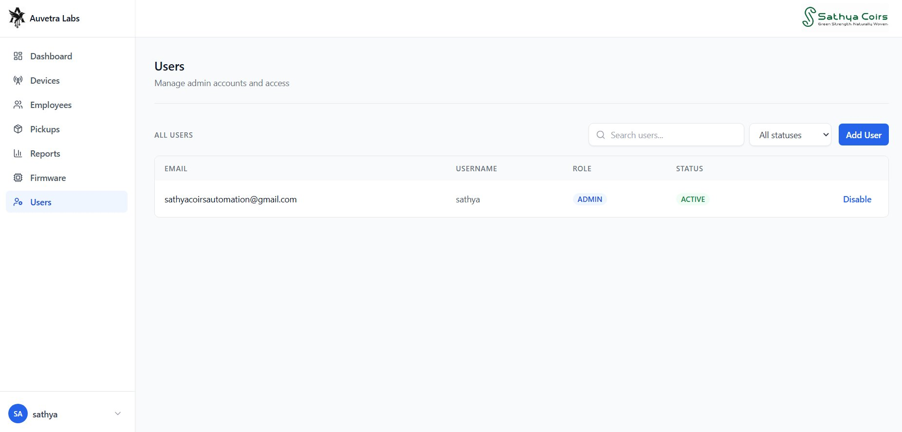

We built and deployed a fleet of ESP32 RFID readers and a web platform for a coir-processing facility. It replaces self-reported, wage-linked production quantities with counts of verified card scans, and covers device provisioning, OTA updates and automated reports. See how we built and deployed it ↓

Workers are paid by how much raw material they process, and that figure used to be reported verbally to a manager, with every incentive to round up. RFID proves who picked but not how much. FlowTracker closes the gap: material is issued in fixed-size units, one at a time, and each verified scan counts as exactly one unit.
Fraud-resistant quantity. Workers were paid on quantity they self-reported at end of shift. FlowTracker counts verified RFID scans of fixed-size material units instead, so the number can't be typed or inflated.
Duplicate-scan protection. A reader firing twice on one tap would quietly bring back the over-counting the system exists to stop, so duplicate handling is built into the pickup API rather than left as an afterthought.
Cards locked to readers. Each employee's card is tied to one assigned reader. A scan at any other reader is rejected (403), so a card can't collect pickups from a different picking area.
Scan-to-enroll, reusable cards. Admins open a short enrollment session and the next tap on that reader registers the card, with no firmware changes needed. Card IDs only have to be unique among active employees, so cards from staff who leave can be reissued.
Fleet provisioning & OTA. Devices move through a status lifecycle (PENDING, ACTIVE, DISABLED, RETIRED). They are set up through a secured captive portal, send heartbeats, pull versioned config, and receive firmware through an admin-approved OTA gate. There's also in-browser flashing over Web Serial.
Automated reporting. Styled Daily, Weekly and Monthly XLSX workbooks are emailed on one IST schedule, with per-area and per-device breakdowns, plus CSV export and a full audit trail.



/api/v1): register, heartbeat, config fetch, pickup; status enforced per endpointDelivered as a working platform: an admin dashboard showing live device status, in-progress pickups, per-area daily completions and stuck-device alerts, with employee enrollment and automated emailed reports. Wage figures now come from verified scan counts rather than a number someone said out loud.



We built FlowTracker end to end (reader hardware, firmware, backend and dashboard) and deployed it on the factory floor. It changed shape as we learned how the work really happens.
Found the real problem. The starting point was RFID attendance. On-site, the real driver turned out to be wages paid on self-reported quantities, so the system was re-scoped to count verified pickups instead.
Designed around the site. Material comes in fixed-size units picked one at a time, cards get reissued when people leave, and readers can fire twice on one tap. Each of these shaped the design.
Built for the people running it. Non-engineers can set up readers through a captive portal, flash firmware from the browser, and approve OTA updates. Managers get Daily, Weekly and Monthly reports by email.
Outcome. Wage figures now come from verified scan counts, backed by an audit trail and role-based admin access.
